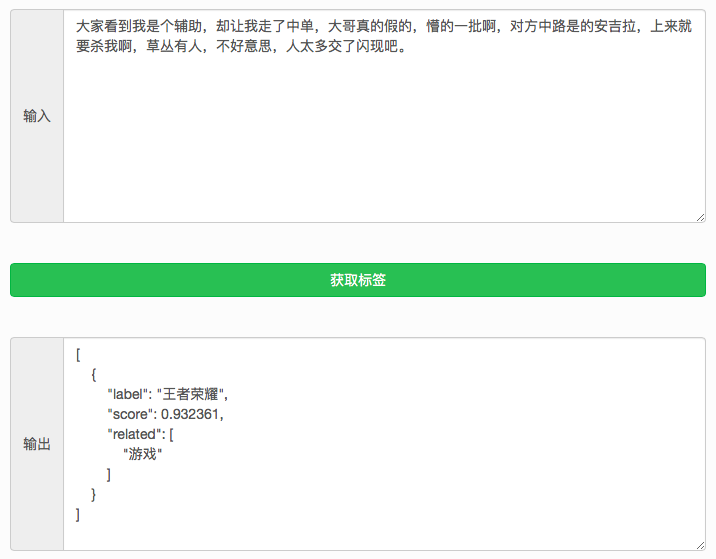
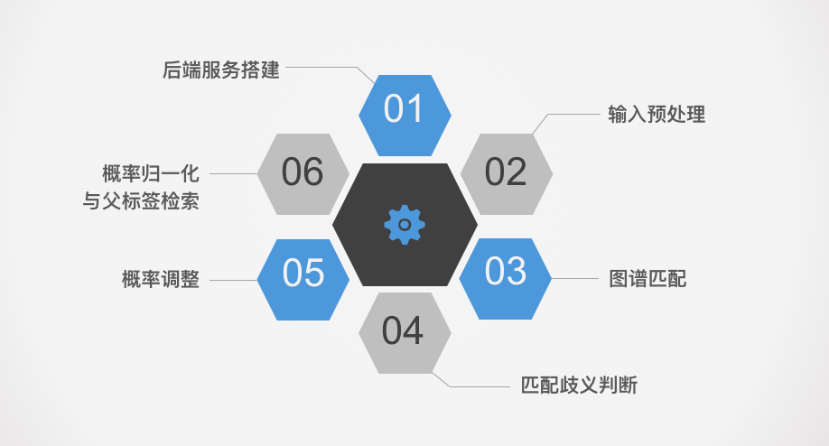
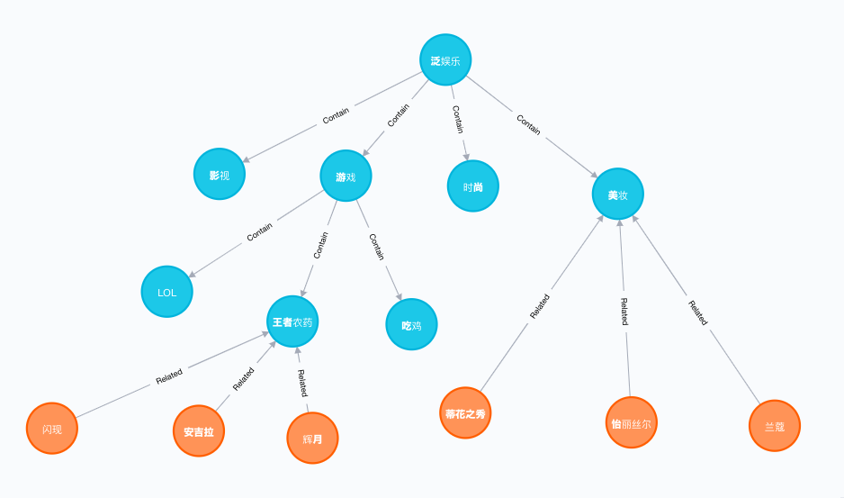
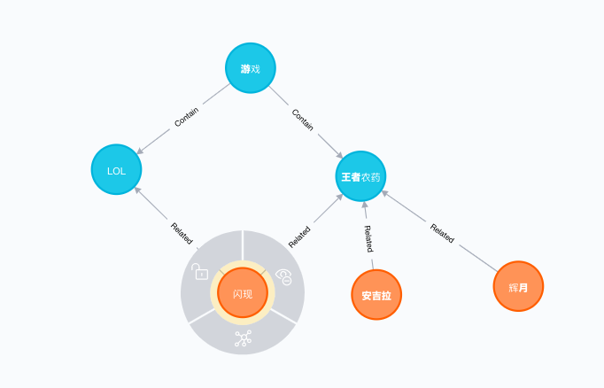

本章导学
- 学习目标
- 掌握智能文本分类系统对外服务的搭建及其内部处理环节,并在服务器中实现它们.
-
引导分析
-
系统输入为: 文章, 评论, 描述等具体的非结构化文本.
-
系统输出为: 该文本涉及的主要标签,主要标签预测概率以及关联的父级标签列表.
-

- 智能文本分类整体系统搭建的六个环节:

-
本章小节:
- 1.1 后端服务搭建
- 学习构建起对外提供restAPI的服务框架，使成果能被非技术人员调用.
- 1.2 输入预处理
- 学习对输入的文本做长度验证, 分词, 去停用词等处理操作.
- 1.3 图谱匹配
- 学习使用输入文本中的词汇进入到图谱中进行匹配, 找出所有可能的标签.
- 1.4 匹配歧义判断
- 学习使用模型对所有不确定的标签进行判断, 找出最合适的标签.
- 1.5 概率调整
- 学习调整标签的概率, 满足随着相关词汇增多, 概率逐渐增大.
- 1.6 概率标签化与父标签检索
- 学习对概率进行归一化处理, 并检索匹配标签的父级标签列表.
- 1.1 后端服务搭建
1.1 后端服务搭建
- 学习目标:
- 了解后端服务在整个系统中的主要作用.
- 学习如何搭建并启动一个完整的django服务框架.
- 使用服务内部的三个python文件运行一个请求的demo.
- 后端服务的主要作用:
- 封装所有的文本处理环节, 对外提供可以调用的restAPI, 让其他部门的同事或者不了解内部细节的人员都可以使用.
- 搭建并启动一个完整的django服务框架四步曲:
- 第一步: 拷贝服务框架的基本文件.
- 第二步: 安装必备的组件.
- 第三步: 启动图数据库并查看数据库状态.
- 第四步: 使用supervisor启动主服务,并查看服务状态.
- 第一步: 拷贝服务框架的基本文件:
- 文件已经存放在/data/django-uwsgi目录下.
- 在服务器中进行文件查看.
- 第二步: 安装必备的组件:
- nginx: 用于负载均衡, 增强服务的健壮性.
- supervisor: 用于django服务的守护和监控, 当服务出现异常时自动重启.
- neo4j: 图数据库, 用于存储和查询数据.
- 组件安装过程: 请参考附录部分的环境安装部署手册.
- 第三步: 启动图数据库并查看数据库状态:
cd /data/django-uwsgi
# 启动图数据库
neo4j start
# 查看状态
neo4j status
- 代码实现(视频演示):
- 位置: 代码将在/data/django-uwsgi/目录下的终端中运行.
第四步: 使用supervisor启动主服务,并查看服务状态:
# 使用supervisord启动主服务
# -c是读取自定义配置文件的意思
# supervisord.conf是在工程主目录下的配置文件
# 里面包含了监控和守护django以及nginx进程的内容
supervisord -c supervisord.conf
# 查看所有监控和守护进程的状态
supervisorctl status all
- 代码位置: 代码将在/data/django-uwsgi/目录下的终端中运行.
- 使用服务内部的三个python文件运行一个请求的demo的三步曲:
- 第一步: 认识三个python文件.
- 第二步: 编写三个文件中的代码内容.
- 第三步: 编写测试文件并发送请求.
-
第一步: 认识三个python文件:
-
urls.py, 位于/data/django-uwsgi/api/目录下, 用于将前端的请求url转发到views函数中.
-
views.py, 位于/data/django-uwsgi/api/目录下, 用于接收来自前端请求的数据, 并传给api.py中的函数执行, 并获得结果, 封装成响应体返回.
-
api.py, 位于/data/django-uwsgi/text_labeled/目录下, 用于执行主要的逻辑处理部分, 并返回结果给views.py中的函数.
-
- 第二步: 编写三个文件中的代码内容:
# 编写urls.py文件
from django.conf.urls import url
from django.contrib import admin
from . import views
urlpatterns = [
url(r'^admin/', admin.site.urls),
# 定义路径api/get_label, 前端将请求该路径
# 请求后, 该条语句将其转发到views中的get_label函数上
# get_label函数将在views.py中实现
# views即是同目录下的views.py文件
url(r'^api/get_label[/]?$', views.get_label)
]
- 代码位置: 代码将写在/data/django-uwsgi/api/urls.py文件中.
# 编写views.py文件
# 首先导入django服务必备的工具包
from django.http import HttpResponse
from rest_framework import viewsets
from rest_framework.response import Response
from rest_framework.decorators import api_view
from rest_framework.permissions import IsAuthenticated
from rest_framework.decorators import authentication_classes
from rest_framework.decorators import permission_classes
import json
# 从text_labeled文件中导入了api.py文件
from text_labeled import api
# 该装饰器用于保证函数能够接收POST请求
@api_view(['POST'])
def get_label(request):
"""获取标签接口, 参数request是请求体, 包含前端传来的数据"""
# 通过请求体接收前端传来的数据text
# request.POST >>> {"text": "xxxx"}
text = request.POST.get("text")
# 调用text_labeled/api.py文件中的label函数进行处理
result = api.label(text)
# 返回json格式的结果，并使用HttpResponse进行封装
return HttpResponse(json.dumps(result, ensure_ascii=False))
- 代码位置: 代码将写在/data/django-uwsgi/api/views.py文件中.
# 编写api.py文件
def label(text):
label = "嘻哈音乐"
return label
- 代码位置: 代码将写在/data/django-uwsgi/text_labeled/api.py文件中.
- 重启服务:
# 服务文件改变后, 需要重新启动才能生效
supervisorctl restart all
- 代码位置: 代码将写在/data/django-uwsgi/目录下的终端中.
- 第三步: 编写测试脚本test.py, 并发送请求:
# 编写test.py
# 导入发送请求的工具包
import requests
def test():
url = "http://127.0.0.1:8087/api/get_label"
data = {"text": "我抽着差不多的烟,又过了差不多的一天！"}
# 使用requests发送post请求
res = requests.post(url, data=data)
print(res.text)
if __name__ == "__main__":
test()
- 代码位置: 代码将写在/data/django-uwsgi/test.py文件中.
- 最终运行结果:
"嘻哈音乐"
-
小节总结:
- 学习了后端服务在整个系统中的主要作用:
- 封装所有的文本处理环节,对外提供可以调用的restAPI，让其他部门的同事或者不了解内部细节的人员都可以使用.
- 学习并实现了搭建并启动一个完整的django服务框架的四步曲:
- 第一步: 拷贝服务框架的基本文件, 在/data/django-uwsgi目录下.
- 第二步: 安装必备的组件, 如: nginx, supervisor, neo4j.
- 第三步: 启动图数据库并查看数据库状态. 使用neo4j start和neo4j status.
- 第四步: 使用supervisor启动主服务, 并查看服务状态. 使用supervisord -c supervisord.conf 和 supervisorctl status all.
- 学习并实现了使用服务内部的三个python文件运行一个请求的demo的三步曲:
- 第一步: 认识三个python文件. urls.py, views.py, api.py.
- 第二步: 编写三个文件中的代码内容. urls中加了一行转发代码, views.py中实现了get_label函数, api.py中实现了label函数.
- 第三步: 编写测试文件并发送请求. 在test.py文件中实现test函数, 使用requests发送了post请求, 并获得了"嘻哈音乐"的结果.
- 学习了后端服务在整个系统中的主要作用:
1.2 输入预处理
- 学习目标:
- 了解输入预处理在整个系统中的作用.
- 掌握实现输入预处理的三步曲.
- 输入预处理在整个系统中的作用:
- 保证用户输入的合理性,避免系统因为接受异常数据而过载,同时为下一步处理做必要的准备.
- 输入预处理的三步曲:
- 第一步:对输入进行长度限制.
- 第二步:对输入进行分词处理.
- 第三步:对分词结果进行去停用词处理.
- 实现输入预处理三步曲的代码分析:
# 代码首先引入三个必备的package,分别是os主要用于操作文件路径，
# jieba用于分词处理,fileinput用于从文件读取数据到内存.
import os
import jieba
import fileinput
# 定义了用户自定义词典路径,和停用词典路径，即在该代码文件路径下应有userdict.txt和stopdict.txt文件
userdict_path = os.path.join(os.path.dirname(__file__), "userdict.txt")
stopdict_path = os.path.join(os.path.dirname(__file__), "stopdict.txt")
# 加载用户自定义词典
jieba.load_userdict(userdict_path)
# 定义输入文本最大长度限制为200
MAX_LIMIT = 200
def handle_cn_text(text: str):
"""用于完成预处理的主要流程, 以原始文本为输入，以分词和去停用词后的词汇列表为输出."""
# 对输入进行合法性检验
if not text: return []
# 使用jieba的cut方法对使用最大限制进行切片的输入文本进行分词
word_list = jieba.cut(text[:MAX_LIMIT])
def _load_stop_dict():
"""用于从文件中加载停用词词表"""
# 使用fileinput加载停用词表至内存,使用字符串的strip()方法去除两端空白符
stop_word_set = set(map(lambda x: x.strip(), fileinput.FileInput(stopdict_path)))
return stop_word_set
# 调用_load_stop_dict()函数
stop_word_set = _load_stop_dict()
# 使用高阶函数filter进行循环过滤操作生成最终结果
word_list = list(filter(lambda x: x not in stop_word_set and len(x)>1, word_list))
return word_list
- 代码位置: 代码将写在/data/django-uwsgi/text_labeled/api.py中.
- 输入实例:
"我的眼睛很大很大,可以装得下天空，装得下高山，装得下大海，装得下整个世界；我的眼睛又很小很小，有心事时，就连两行眼泪，也装不下."
- 输出效果:
['眼睛', '很大', '很大', '装得', '天空', '装得', '高山', '装得', '大海', '装得', '整个', '世界', '眼睛', '很小', '很小', '心事', '两行', '眼泪', '装不下']
- 主要注释:
# 定义了用户自定义词典路径,和停用词典路径
# 加载用户自定义词典
# 定义输入文本最大长度限制为200
"""用于完成预处理的主要流程, 以原始文本为输入，以分词和去停用词后的词汇列表为输出."""
# 对输入进行合法性检验
# 使用jieba的cut方法对使用最大限制进行切片的输入文本进行分词
"""用于从文件中加载停用词词表"""
# 使用fileinput加载停用词表至内存,使用字符串的strip()方法去除两端空白符
# 调用_load_stop_dict()函数
# 使用高阶函数filter进行循环过滤操作生成最终结果
-
小节总结:
- 学习了输入预处理在整个系统中的作用:
- 保证用户输入的合理性, 避免系统因为接受异常数据而过载, 并为下一步处理做数据准备.
- 学习输入预处理的三步曲:
- 第一步: 对输入进行长度限制.
- 第二步: 对输入进行分词处理.
- 第三步: 对分词列表进行去停用词处理.
- 实现了输入预处理三步曲的过程:
- 创建handle_cn_text函数来实现.
- 使用切片方法进行长度限制, 最大长度限制为200.
- 使用jieba分词进行分词处理.
- 使用高阶函数filter进行循环过滤操作.
- 学习了输入预处理在整个系统中的作用:
1.3 图谱匹配
- 学习目标:
- 知道什么是标签词汇图谱.
- 了解图谱匹配在整个系统中的作用.
- 掌握实现图谱匹配的过程.
- 什么是标签词汇图谱:

- 标签词汇图谱分析:
- 图谱由节点和关系(边)组成.
- 蓝色节点代表标签,橘色节点代表词汇.
- 在节点与节点之间存在着不同类型的边.
- 蓝色节点(标签节点)之间的边表示包含关系,没有权重值.
- 蓝色节点与橘色节点(词汇节点)之间的边表示隶属关系,有权重值，代表该词汇属于该标签的概率.
- 所有的节点与边组成了一个树结构,也就是我们的图谱.
- 图谱匹配的过程,即将分词列表中的词汇与词汇节点进行匹配，相同则返回该标签节点名称和边上的权重.
- 图谱匹配在整个系统中的作用:
- 通过匹配词汇召回所有可能的标签.
- 掌握实现图谱匹配的过程:
- 注意: 我们并没有构建标签词汇图谱,它将在第二章中构建，我们先假设图谱已经存在.
- 实现图谱匹配过程的代码分析:
# 首先导入操作图数据库neo4j的必备官方工具neo4j-driver,
# 从settings.py配置文件中导入数据库配置NEO4J_CONFIG
from neo4j.v1 import GraphDatabase
from settings import NEO4J_CONFIG
# 导入用于扁平化列表的chain方法
from itertools import chain
def get_index_map_label(word_list):
"""
用于获取每个词汇在图谱中对应的类别标签
该函数以词汇列表为输入, 以词汇出现在词汇列表
中的索引和对应的[标签, 权重]列表为输出.
"""
# 对word_list进行合法性检验
if not word_list: return []
# 使用GraphDatabase开启一个driver.
_driver = GraphDatabase.driver(**NEO4J_CONFIG)
# 开启neo4j的一个session
with _driver.session() as session:
def _f(index, word):
"""以词汇列表中一组词索引和词作为输入,
返回该索引和词对应的标签列表."""
# 进行输入的合法性判断
if not word: return []
# 建立cypher语句, 它匹配一条图中的路径, 该路径以一个词汇为开端通过一条边连接一个Label节点,
# 返回标签的title属性,和边的权重, 这正是我们图谱构建时定义的连接模式.
cypher = "MATCH(a:Vocabulary{name:%r})-[r:Related]-(b:Label) \
RETURN b.title, r.weight" % (word)
record = session.run(cypher)
result = list(map(lambda x: [x[0], x[1]], record))
if not result: return []
return [str(index), result]
# 将word_list的索引和词汇作为输入传给_f()函数,并将返回结果做chain操作
index_map_label = list(
chain(*map(lambda x: _f(x[0], x[1]), enumerate(word_list))))
return index_map_label
- 代码位置: 代码将写在/data/django-uwsgi/text_labeled/api.py中.
- 输入实例:
['眼睛', '很大', '很大', '装得', '天空', '装得', '高山', '装得', '大海', '装得', '整个', '世界', '眼睛', '很小', '很小', '心事', '两行', '眼泪', '装不下']
- 输出效果:
[] # 因为我们图谱还没有构建, 因此暂时会返回一个空列表, 实际上应该返回类似结构: ["0", [["美妆", 0.654], ["情感故事":0.765]]]
- 主要注释:
# 从settings.py配置文件中导入数据库配置NEO4J_CONFIG
"""
用于获取每个词汇在图谱中对应的类别标签
该函数以词汇列表为输入, 以词汇出现在词汇列表
中的索引和对应的[标签, 权重]列表为输出.
"""
# 对word_list进行合法性检验
# 使用GraphDatabase开启一个driver.
# 开启neo4j的一个session
"""以词汇列表中一组词索引和词作为输入,
返回该索引和词对应的标签列表."""
# 进行输入的合法性判断
# 建立cypher语句, 它匹配一条图中的路径, 该路径以一个词汇为开端通过一条边连接一个Label节点,
# 返回标签的title属性,和边的权重, 这正是我们图谱构建时定义的连接模式.
# 将word_list的索引和词汇作为输入传给_f()函数,并将返回结果做chain操作
-
小节总结:
-
学习了什么是标签词汇图谱:
- 它是由标签节点和词汇节点以及节点之间的边组成的一张树状图.
-
学习了图谱匹配在整个系统中的作用:
- 通过匹配词汇召回所有可能的标签.
-
学习并实现了图谱匹配的过程:
- 创建了get_index_map_label函数来实现.
- 使用neo4j的driver开启了一个session.
- 创建了一条cypher语句, 它匹配词汇节点到标签节点的路径,返回标签的title属性和边的weight属性.
-
1.4 匹配歧义判断
- 学习目标:
- 知道什么是匹配歧义.
- 了解匹配歧义判断在整个系统中的作用.
- 掌握实现匹配歧义判断的过程.
- 什么是匹配歧义:
- 在图谱匹配过程中, 一个词汇可能一起匹配到多个标签, 这时说明我们的词汇出现了歧义现象，这就是匹配歧义.
- 举个栗子:

- "闪现"一词匹配到两个标签, LOL和王者农药, 说明这个词汇在句子中具有歧义，需要进行更深层次的判断.
- 匹配歧义判断的作用:
- 在词汇出现歧义时,通过模型重新计算所属标签的概率，从语义层面获得更真实的标签概率.
-
掌握实现匹配歧义判断的过程
- 注意: 函数中会调用多模型预测函数, 我们会在第三,四章中实现, 这里我们会编写一个空壳函数暂时充当.
def request_model_serve(word_list, label_list):
return [["情感故事", 0.865]]
代码位置: 代码将写在/data/django-uwsgi/text_labeled/model_train/multithread_predict.py中.
- 实现匹配歧义判断过程的代码分析:
# 导入多模型预测函数
from model_train.multithread_predict import request_model_serve
def weight_update(word_list, index_map_label):
"""该函数将分词列表和具有初始概率的标签-概率列表作为输入,将模型预测后的标签-概率列表作为输出"""
# 首先将列表转化为字典的形式
# index_map_label >>> ["1", [["美食", 0.735], ["音乐", 0.654]], "2", [["美妆", 0.734]] >>>
# {"1": [["美食", 0.735],["音乐", 0.654]], "2": [["美妆", 0.734]]}
index_map_label = dict(zip(index_map_label[::2], index_map_label[1::2]))
for k, v in index_map_label.items():
# v的长度大于1说明存在歧义现象
if len(v) > 1:
# 获取对应的标签作为参数,即通知服务应该调用哪些模型进行预测.
label_list = list(map(lambda x: x[0], v))
# 通过request_model_serve函数获得标签最新的预测概率,并使用字典方式更新.
# v >>> [["美食": 0.954]]
v = request_model_serve(word_list, label_list)
index_map_label.update({k:v})
# 将字典转化为列表形式
index_map_label_ = list(chain(*map(lambda x: [x[0], x[1]], index_map_label.items())))
return index_map_label_
- 代码位置: 代码将写在/data/django-uwsgi/text_labeled/api.py中.
- 输入实例:
# word_list
['眼睛', '很大', '很大', '装得', '天空', '装得', '高山', '装得', '大海', '装得', '整个', '世界', '眼睛', '很小', '很小', '心事', '两行', '眼泪', '装不下']
# index_map_label
["0", [["美妆", 0.654], ["情感故事", 0.765]]]
- 输出效果:
["0", [["情感故事", 0.865]]]
- 主要注释:
# 导入多模型预测函数
"""该函数将分词列表和具有初始概率的标签-概率列表作为输入,将模型预测后的标签-概率列表作为输出"""
# 首先将列表转化为字典的形式
# index_map_label >>> ["1", [["美食", 0.735], ["音乐", 0.654]], "2", [["美妆", 0.734]] >>>
# {"1": [["美食", 0.735],["音乐", 0.654]], "2": [["美妆", 0.734]]}
# v的长度大于1说明存在歧义现象
# 获取对应的标签作为参数,即通知服务应该调用哪些模型进行预测.
# 通过request_model_serve函数获得标签最新的预测概率,并使用字典方式更新.
# v >>> [["美食": 0.954]]
# 将字典转化为列表形式
-
小节总结:
- 学习了什么是匹配歧义:
- 在图谱匹配过程中,一个词汇可能一起匹配到多个标签，这时说明我们的词汇出现了歧义现象，这就是匹配歧义.
- 学习了匹配歧义判断在整个系统中的作用:
- 在词汇出现歧义时,通过模型重新计算所属标签的概率，从语义层面获得更真实的标签概率.
- 学习并实现了匹配歧义判断的过程:
- 创建了weight_update函数来实现.
- 通过检测匹配到的标签数量进行歧义判断.
- 通过调用多模型预测服务函数request_model_serve来更新概率.
- 学习了什么是匹配歧义:
1.5 概率调整
- 学习目标:
- 知道什么是概率调整.
- 了解概率调整在整个系统中的作用.
- 掌握实现概率调整的过程.
- 什么是概率调整:
- 当句子中的多个词都指向同一标签时, 这个标签概率将成为所有的概率之和.
- 举个栗子:
我爱苹果！ -------> [["水果", 0.654], ["电影", 0.654], ["公司", 0.654]]
# 出现了一次苹果, 可能是在说水果，电影，或者公司, 他们的概率基本上是相同的. 这句话打上什么标签不能确定.
我爱苹果，橘子，香蕉! --------> [["水果", 0.654], ["电影", 0.654], ["公司", 0.654], ["水果", 0.654], ["水果", 0.654]]
# 全句共出现了三次有关水果的词，如果水果的概率是苹果，橘子，香蕉为水果的概率和，这样就大于了电影或者公司的概率. 基本上可以打上一个确定的标签了.
- 概率调整的作用:
- 保证随着某一类别词汇出现的次数增多,这个类别的概率会随之增加.
- 实现概率调整过程的代码分析:
# 导入可以进行扁平化操作的reduce
# 导入进行合并操作的pandas
from functools import reduce
import pandas as pd
def control_increase(index_map_label_):
"""以模型预测后的标签-权重列表为输入, 以标签归并后的结果为输出"""
if not index_map_label_: return []
# index_map_label_ >>>
# ["2", [["情感故事", 0.765]], "3", [["情感故事", 0.876], ["明星", 0.765]]]
# 将index_map_label_奇数项即[label, score]取出放在字典中
# k的数据结构形式:
# [{'label': '情感故事', 'score': 0.765}, {'label': '情感故事', 'score': 0.876},
# {'label': '明星', 'score': 0.765}]
k = list(map(lambda x: {"label": x[0], "score": x[1]}, reduce(
lambda z, y: z + y, index_map_label_[1::2])))
# 使用pandas中的groupby方法进行合并分值
df = pd.DataFrame(k)
df_ = df.groupby(by=['label'])['score'].sum()
return df_
- 代码位置: 代码将写在/data/django-uwsgi/text_labeled/api.py中.
- 输入实例:
["2", [["情感故事", 0.765]], "3", [["情感故事", 0.876], ["明星", 0.765]]]
- 输出效果:
label
情感故事 1.641
明星 0.765
Name: score, dtype: float64
- 主要注释:
"""以模型预测后的标签-权重元组列表为输入, 以标签归并后的结果为输出"""
# index_map_label_ >>>
# ["2", [["情感故事", 0.765]], "3", [["情感故事", 0.876], ["明星", 0.765]]]
# 将index_map_label_奇数项即[label, score]取出放在字典中
# k的数据结构形式:
# [{'label': '情感故事', 'score': 0.765}, {'label': '情感故事', 'score': 0.876},
# {'label': '明星', 'score': 0.765}]
# 使用pandas中的groupby方法进行合并分值
-
小节总结:
- 什么是概率调整:
- 当句子中的多个词都指向同一标签时, 这个标签概率将成为所有的概率之和.
- 学习了概率调整在整个系统中的作用:
- 保证随着某一类别词汇出现的次数增多,这个类别的概率会随之增加.
- 学习并实现了概率调整的过程:
- 创建control_increase函数来实现.
- 使用了pandas中的groupby方法进行合并求和.
- 什么是概率调整:
1.6 概率归一化与父标签检索
- 学习目标:
- 知道什么是概率归一化与父标签检索
- 了解概率归一化与父标签检索在整个系统中的作用.
- 掌握实现概率归一化与父标签检索的过程.
- 什么是概率归一化:
- 对超过1的概率进行归一化处理。
- 什么是父标签检索:
- 在标签树中找到某个标签的所有父节点。
- 概率归一化的作用:
- 使标签概率的结果在（0到1）的概率值域内.
- 父标签检索的作用:
- 找到当前标签的父标签列表,丰富系统的返回结果.
- 实现概率归一化与父标签检索过程的代码分析:
import numpy as np
def father_label_and_normalized(df_):
"""
以概率调整后的DataFrame对象为输入, 以整个系统的最终结果为输出
输入样式为:DataFrame<[[“LOL”, 1.465]]>
输出样式为:[{“label”: “LOL”, “score”: “0.811”, “related”:[“游戏”]}]
"""
def _sigmoid(x):
y = 1.0 / (1.0 + np.exp(-x))
return round(y, 3)
def _sg(pair):
"""获得单个标签的父级标签和归一化概率"""
# 使用GraphDatabase开启一个driver.
_driver = GraphDatabase.driver(**NEO4J_CONFIG)
with _driver.session() as session:
# 通过关系查询获得从该标签节点直到根节点的路径上的其他Label节点的title属性
cypher = "MATCH(a:Label{title:%r})<-[r:Contain*1..3]-(b:Label) \
WHERE b.title<>'泛娱乐' RETURN b.title" % pair[0]
record = session.run(cypher)
result = list(map(lambda x: x[0], record))
return {"label": pair[0], "score": _sigmoid(pair[1]), "related": result}
# 遍历所有的标签
return list(map(_sg, df_.to_dict().items()))
- 代码位置: 代码将写在/data/django-uwsgi/text_labeled/api.py中.
- 输入实例:
label
情感故事 1.641
明星 0.765
Name: score, dtype: float64
- 输出效果:
# 因为没有构建图谱，所以related匹配不到任何父标签
[{'label': '情感故事', 'score': 0.838, 'related': []}, {'label': '明星', 'score': 0.682, 'related': []}]
- 主要注释
"""
以概率调整后的DataFrame对象为输入, 以整个系统的最终结果为输出
输入样式为:DataFrame<[[“LOL”, 1.465]]>
输出样式为:[{“label”: “LOL”, “score”: “0.811”, “related”:[“游戏”]}]
"""
"""获得单个标签的父级标签和归一化概率"""
# 使用GraphDatabase开启一个driver
# 通过关系查询获得从该标签节点直到根节点的路径上的其他Label节点的title属性
# 遍历所有的标签
-
小节总结:
- 什么是概率归一化:
- 对超过1的概率进行归一化处理。
- 什么是父标签检索:
- 在标签树中找到某个标签的所有父节点。
- 学习了概率归一化在整个系统中的作用:
- 使标签概率的结果在（0到1）的概率值域内.
- 学习了父标签检索在整个系统中的作用:
- 找到当前标签的父标签列表,丰富系统的返回结果.
- 学习并实现了概率归一化与父标签检索的过程:
- 创建father_label_and_normalized函数来实现.
- 使用sigmoid函数来进行归一化处理.
- 通过创建cypher语句匹配标签图谱中的所有父节点来获得父标签列表.
- 什么是概率归一化:
本章总结
-
第1小节: 后端服务搭建
-
学习了后端服务在整个系统中的主要作用:
- 封装所有的文本处理环节,对外提供可以调用的restAPI，让其他部门的同事或者不了解内部细节的人员都可以使用.
-
学习并实现了搭建并启动一个完整的django服务框架四步曲.
- 第一步: 拷贝服务框架的基本文件, 在系统的/data/jango-uwsgi目录.
- 第二步: 安装必备的组件, 如: nginx, supervisor, neo4j等, 具体安装过程详见安装手册.
- 第三步: 启动图数据库并查看数据库状态.
- 第四步: 使用supervisor启动主服务,并查看服务状态.
- 第一步: 拷贝服务框架的基本文件, 在系统的/data/jango-uwsgi目录.
- 学习并实现了使用服务内部的三个python文件运行一个请求的demo的三步曲.
- 第一步: 认识三个python文件.
- 第二步: 编写三个文件中的代码内容.
- 第三步: 编写测试文件并发送请求.
- 第一步: 认识三个python文件.
-
-
第2小节: 输入预处理
- 学习了输入预处理在整个系统中的作用:
- 保证用户输入的合理性, 避免系统因为接受异常数据而过载.
- 学习并实现了输入预处理的三步曲.
- 第一步:对输入进行长度限制.
- 第二步:对输入进行分词处理.
- 第三步:对分词结果进行去停用词处理.
- 第一步:对输入进行长度限制.
- 学习了输入预处理在整个系统中的作用:
-
第3小节: 图谱匹配
- 学习了什么是标签词汇图谱:
- 它是由标签节点和词汇节点以及节点之间的边组成的一张树状图.
- 学习了图谱匹配在整个系统中的作用:
- 通过匹配词汇召回所有可能的标签.
- 学习并实现了图谱匹配的过程.
- 学习了什么是标签词汇图谱:
-
第4小节: 匹配歧义判断
- 学习了什么是匹配歧义:
- 在图谱匹配过程中, 一个词汇可能一起匹配到多个标签，这时说明我们的词汇出现了歧义现象，这就是匹配歧义.
- 学习了匹配歧义判断在整个系统中的作用:
- 在词汇出现歧义时, 通过模型重新计算所属标签的概率，从语义层面获得更真实的标签概率.
- 学习并实现了匹配歧义判断的过程.
- 学习了什么是匹配歧义:
-
第5小节: 概率调整
- 什么是概率调整:
- 概率: 是指输入文本属于某个标签的概率.
- 调整: 是指同类别的概率相加.
- 学习了概率调整在整个系统中的作用:
- 保证随着某一类别词汇出现的次数增多, 这个类别的概率会随之增加.
- 学习并实现了图谱匹配的过程.
- 什么是概率调整:
-
第6小节: 概率归一化与父标签检索
-
什么是概率归一化:
- 对超过1的概率进行归一化处理。
- 什么父标签检索:
- 在标签树中找到某个标签的所有父节点。
- 学习了概率归一化在整个系统中的作用:
- 使标签概率的结果在（0到1）的概率值域内.
- 学习了父标签检索在整个系统中的作用:
- 找到当前标签的父标签列表, 丰富系统的返回结果.
- 学习并实现了概率归一化与父标签检索的过程.
-